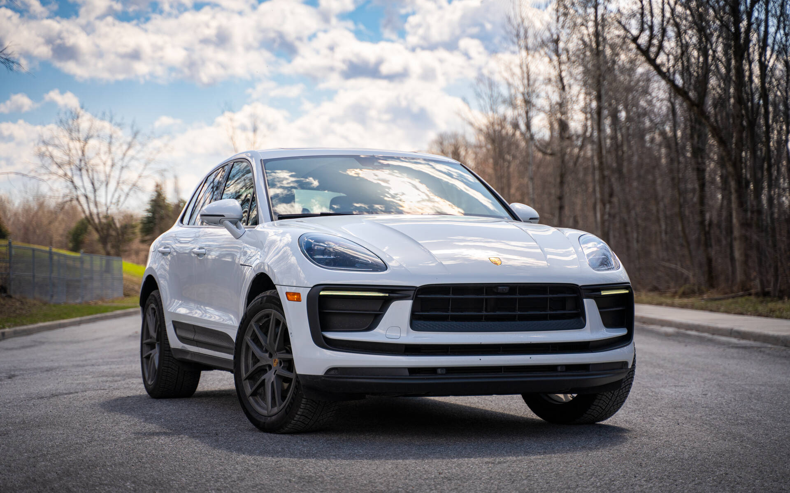
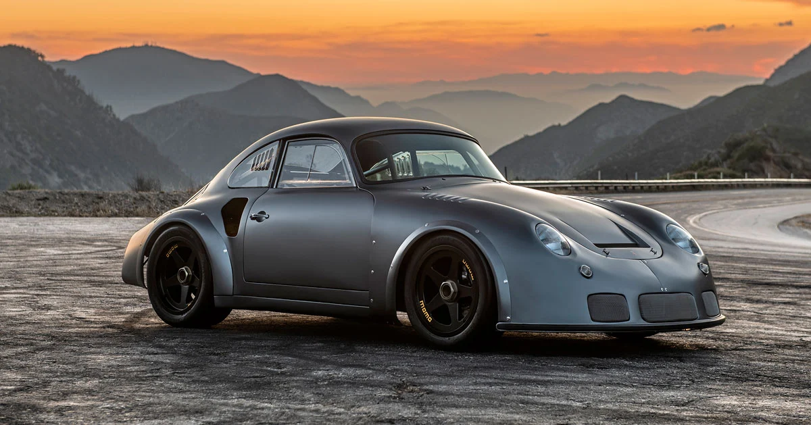
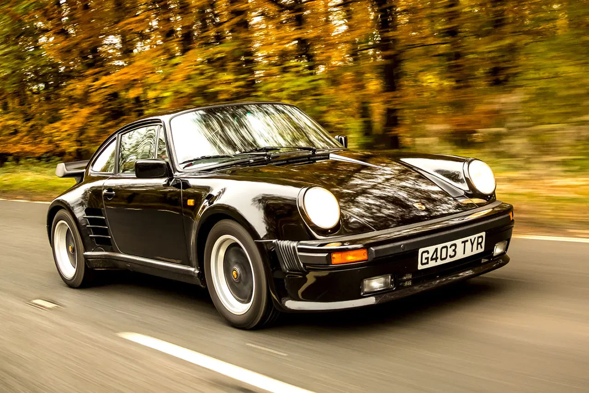
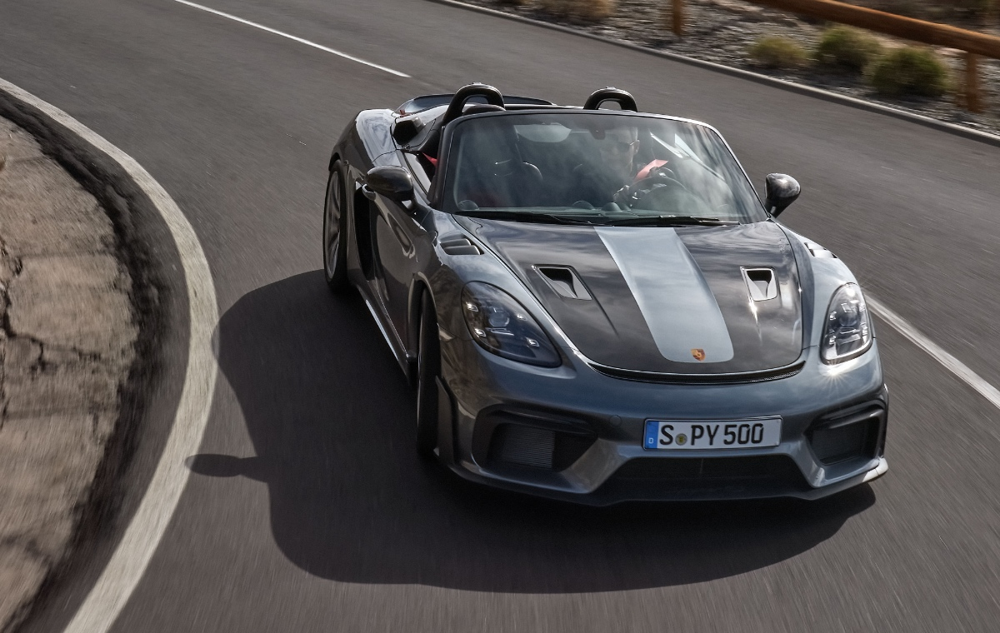

|
718 BOXSTER
The engines were 2.5-liters engine with power 350 hp. 
|
718 CAYMAN GT4 RS
The engines were 4.0-liters engine with power 414 hp. 
|
911 CARRERA
The engines were 3.0-liters engine with power 443 hp. 
|
911 GT3 RS
The engines were 4.0-liters engine with power 502 hp. 
|
911 TURBO
The engines were 4.0-liters engine with power 540 hp. 
|
|
CAYENNE TURBO GT
The engines were 4.0-liters v8 engine with power 631 hp. 
|
CAYMAN GTS 4.0
The engines were 4.0-liters engine with power 394 hp. 
|
MACAN

The engines were 2.9-liters engine with power 248 hp. |
PANAMERA
The engines were 3.0-liters v6 engine with power 325 hp. 
|
TAYCAN
The electric motors are typically positioned on both the front and rear axles
viding all-wheel drive (AWD) capabilities.
The battery capacity can vary based on the specific model and version.
The range can typically be anywhere from around 200 to 300 miles or more on a full charge. 
|
|
PORSCHE 365

The engines were 1.6-liters engine with power 90 hp. |
911 CARRERA CABRLOET
The engines were 3.0-liters engine with power 370 hp. 
|
PORSCHE DAKAR
The engines were 4.2-liters v8 engine with power 443 hp. 
|
PORSCHE TARGA
The engines were 3.8-liters engine with power 370 hp. 
|
992 TURBO S
The engines were 3.8-liters engine with power 641 hp. 
|
|
TAYCAN GTS
The engines were 6.2-liters engine with power 443 hp. 
|
TAYCAN 4 CROSS TURSIMO
The engines electric with power 375 hp. 
|
CAYMAN GTS 2015
The engines were 3.4-liters engine with power 340 hp. 
|
911 CARRERA 4S
The engines were 3.0-liters engine with power 443 hp. 
|
911 CARRERA GTS
The engines were 3.0-liters engine with power 450 hp. 
|
|
911 TURBO S CABRIOLET
The engines were 3.8-liters engine with power 641 hp. 
|
PORSCHE 930

The engines were 3.0-liters engine with power 260 hp. |
PANAMERA SPORT TURISMO
The engines were 2.9-liters engine with power 325 hp. 
|
SPYDER

The engines were 4.6-liters engine with power 560 hp. |
CAYENNE TURBO GT
The engines were 4.0-liters engine with power 631 hp. 
|